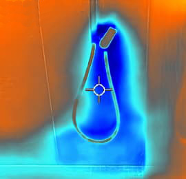
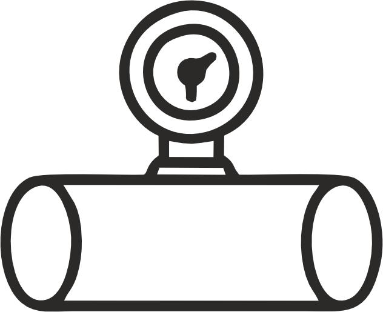

Теплова пляма на поверхні підлоги, зафіксована тепловізором, та акустичним витокошукачем

Виток на стіні за плиткою
Холодна вода з пошкодженого змішувача, яку видно під плиткою за допомогою тепловізора
Виток з системи опалення
Виток в двох місцях води з пошкодженої будівельниками труби системи опалення під підлогою
Виток з каналізації
Виток води через розгерметизацію каналізаційних труб, що призводить до змочення стін та підлоги
Обладнання, що ми використовуємо для пошуку витоків
1. Тепловізор Flir
Саме цим приладом проводиться первинний обстеження: пошук області витоку та зволожених водою стін та підлог. Часто виток можна знайти виключно тепловізором. Важливий прилад для пошуку траси труб, прихованих в стінах чи підлозі, та загального розуміння ступеню їх пошкодження.
2. Вологомір Exotek
Прилад для визначення кількості вологи в стінах чи підлозі на ділянках, що змочені водою з витока. Порівняння ступеню вологості стіни на різних ділянках дозволяють наблизитись до ймовірного місця витоку. Разом з тепловізором є невідємною складовою первинної діагностики витоку.
3. Акустичний витокошукач
Прилад що дозволяє почути характерний шум води чи повітря, що витікають під надлишковим тиском з труб в місці витоку, при цьому труби можуть бути прокладені в підлозі, стіні, грунті. Характерний шум при наближенні до місця витоку стає сильнішим, що відображається приладом і транслюється в навушник.
4. Трасуючий газ та газоаналізатор
Метод пошуку, що полягає в закачці в трубу з витоком, спеціальної газової суміші, компонентом якої є водень. Ділянка вздовж труби, над якою газоаналізатором буде знайдено підвищенну концентрацію водню, з високою ймовірністю буде місцем витоку.
Як відбувається пошук
1. Залишаєте заявку на сайті або телефонуєте нам.

2. Ми відповідаємо вам на протязі 30 хвилин і ви розповідаєте все, що знаєте про виток
Виконуємо ремонтні роботи. Вартість від 500 грн. Після знаходження місця витоку можемо виконати ремонтні роботи з усунення причини. В деяких випадках роботи можуть бути виконані одразу.
Виконуємо монтаж інженерних систем різної складності: тепла підлога, гаряче та холодне водопостачання, каналізація. Встановлення сантехнічних приладів, Монтаж та обслуговування ситем хімічної водоочистки. Вартість рахується по технічному завданню.